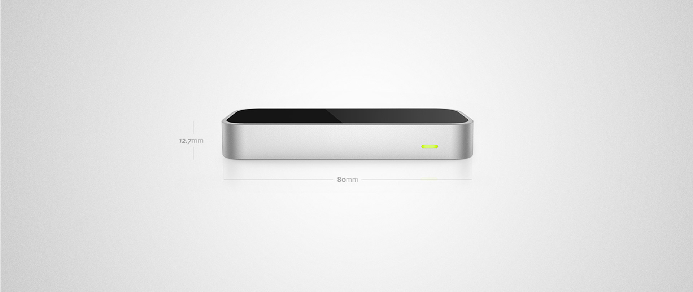

Swoosh 2
Swoosh 2 the iTunes controller for the Leap Motion v2
IMMERSE
What did I Create?
This time not only do you have iTunes control but MIDI and OSC support
LEAP MOTION
What is the Leap Motion
Leap Motion Controller. Tiny device. Huge possibilities. Reach into new worlds and control your computer in a whole new way. The Leap Motion Controller tracks both hands and all 10 fingers with incredible speed – so you can play, create, and explore without touching anything.
New #AugmentedReality magic brought to you by @jonathanhammond. WATCH: http://t.co/YS2Fze0ncW
— LeapMotion (@LeapMotion) August 14, 2014Sweet jams, @jonathanhammond! Would love to see more: http://t.co/Cbz2knYCHz
— LeapMotion (@LeapMotion) December 25, 2013New #AugmentedReality magic brought to you by @jonathanhammond. WATCH: http://t.co/YS2Fze0ncW
— LeapMotion (@LeapMotion) August 14, 2014Sweet jams, @jonathanhammond! Would love to see more: http://t.co/Cbz2knYCHz
— LeapMotion (@LeapMotion) December 25, 2013 
Why did I Create this?
Leap Motion and Andy Miller (ex Apple VP) came to me with a developer contribution fund to continue work on my Swoosh music player. How could I possibily say no to work with such an innovating startup hardware company again.

Leap Motion Plugin for Quartz Composer
We created the Offical Quartz Composer Leap Motion Plug-In and gave it away free to the Quartz Composer Community. You can download it for free here.

{kind=link}
{kind=link}
{kind=link}
{kind=link}
{kind=link}
{kind=link}
{kind=link}
{kind=link}
{kind=link}
Live Augmented Reality
These are live Augmented Reality shots of Swoosh 2 in action. No post production work has been done, realtime, unrehearsed development videos.
TECHNICAL
Research and Prototypes
After endless amount of iterations regarding UX and UI designs I built a dynamic framework in Quartz Composer to illustrate this key control user experiences when using three dimensional movements.
TECHNICAL
The Control Dial
Leap Motion Control Dial, demonstrating video playback. Written from the ground up this is advance control dial specially man for the Leap Motion and Swoosh. Forwards and backwards playback 5 different playback speeds (dependant on number of fingers) Pitch Shifted audio HD video playback
TECHNICAL
Dual Displays
Two displays running concurrently at no extra cost to your GPU. One for the performer, one for the audience. Note the guidence system that displays on the performer view this is for the performers master screen only.
TECHNICAL
Development Log
Development prototypes, frameworks and milestones
Sep 2013
Download the Leap Motion Quartz Composer plugin
@TimsDominion @leapmotion There is a QC plugin and Devs are building apps with it. Take a look at Swoosh from @jonathanhammond #QC #leapdev
— Leap Motion Dev (@LeapMotionDev) July 18, 2013Dec 2013
Sweet jams, @jonathanhammond! Would love to see more: http://t.co/Cbz2knYCHz
— LeapMotion (@LeapMotion) December 25, 2013Jan 2013
@jonathanhammond Now that's determination :) Can't wait to see the final product.
— LeapMotion (@LeapMotion) October 29, 2013August 2013
New #AugmentedReality magic brought to you by @jonathanhammond. WATCH: http://t.co/YS2Fze0ncW
— LeapMotion (@LeapMotion) August 14, 2014